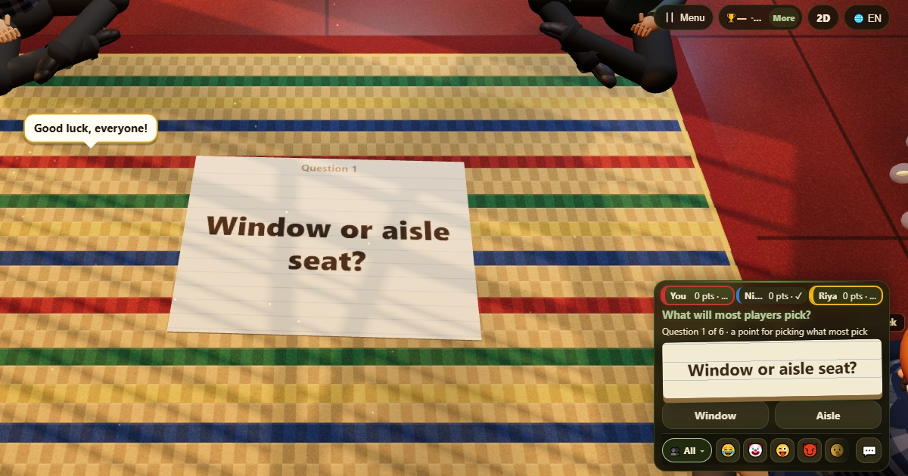

Suara Terbanyak (Majority Vote)
- 👥 3–10 pemain
- Game pesta
- 🆓
Panduan Bahasa Indonesia
Tebak apa yang akan dipilih kebanyakan orang di meja.
English name: Majority Vote

Cara bermain
- Sebuah pertanyaan muncul dengan beberapa pilihan jawaban.
- Setiap orang diam-diam memilih jawaban yang menurutnya akan dipilih kebanyakan orang.
- Setelah semua memilih, totalnya ditampilkan sebagai batang.
- Semua yang memilih jawaban paling populer mendapat satu poin.
Poin
Satu poin setiap kali kamu memilih jawaban mayoritas. Kalau dua jawaban sama-sama paling banyak dipilih, keduanya dihitung.
Siapa yang menang
Pemain dengan poin terbanyak setelah pertanyaan terakhir menang.
Pertanyaan yang sering diajukan
Apakah pilihanku rahasia?
Ya. Hanya totalnya yang ditampilkan.
Bagaimana kalau seri?
Kalau dua jawaban dipilih sama banyak, keduanya dihitung sebagai mayoritas.
Cara bermain
- Sebagai tamu: Tanpa daftar dan tanpa login. Pilih nama dan langsung main.
- Lawan komputer: Kalau tidak ada teman, pemain komputer mengisi kursi kosong. Mudah, normal, atau sulit.
- Online: Duduk di meja umum bersama pemain dari seluruh dunia.
- Bareng teman di dekatmu: Buat permainan di satu HP lalu bagikan kode atau QR. Teman bergabung dari HP mereka.
- Di satu HP: Gantian pegang HP: satu perangkat cukup untuk seluruh keluarga.
Bahasa lain
- हिन्दी: बहुमत
- Hinglish: Majority Vote
- Español: Voto de la mayoría
- Português: Voto da maioria
- Français: Vote de la majorité
- Deutsch: Was sagt die Mehrheit?
- Türkçe: Çoğunluk Oyu
- Italiano: Voto di maggioranza
- 日本語: 多数決ゲーム
- 한국어: 다수결 게임
- 中文: 多数派投票
- Русский: Мнение большинства
- اردو: اکثریت کی رائے
- नेपाली: बहुमतको मत
- বাংলা: বেশিরভাগের ভোট
- English: Majority Vote · Aturan lengkap (Inggris)
Ide permainan
Semua game
 Siapa Mata-matanya?
Siapa Mata-matanya? Manusia Serigala
Manusia Serigala Truth or Dare
Truth or Dare Kertas Teka-teki
Kertas Teka-teki Cerita Lipat
Cerita Lipat Flying Chit
Flying Chit Tunnel Race
Tunnel Race Turbo Tunnel
Turbo Tunnel
Di ChitPlay tidak ada uang sungguhan, taruhan, atau hadiah. Poin tidak bernilai.